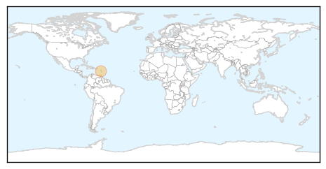
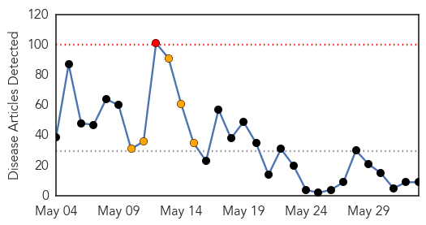
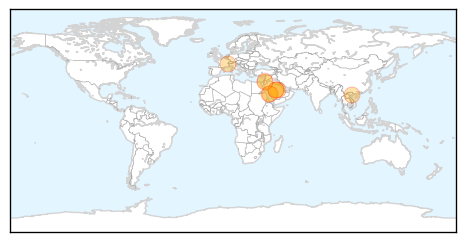

Chikungunya
30-Day Web Trend
3 alerts, 0 warnings

30-Day Twitter Trend
2 alerts, 0 warnings

Article Locations
Article Confidences

Top Articles:
Top Tweets:
-
No tweets found for Jun 02, 2014
MERS
30-Day Web Trend
1 alerts, 5 warnings

30-Day Twitter Trend
1 alerts, 0 warnings

Article Locations
Article Confidences

Top Articles:
- 0.999
- How Should Public Health Departments Prepare?
- 0.998
- Mers Virus Claims New Victim in Jordan
- 0.998
- Algeria detects first two cases of MERS virus
- 0.997
- Ministry warns about risk of MERS-CoV spread to Vietnam
- 0.995
- MERS arrives in Algeria, hits 6 more in Saudi Arabia
- 0.990
- Compound blocks MERS from spreading
- 0.979
- 6 fatalities, 11 infections from MERS-CoV in Jordan
- 0.867
- Saudi Arabia says one man positive for MERS, another two dead
- 0.644
- Gulf Daily News World News Man dies in Jordan of deadly infection
Top Tweets:
-
No tweets found for Jun 02, 2014